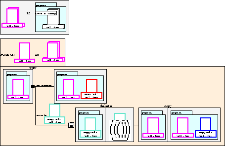

A visual shell (e.g., the Macintosh Finder) is a direct manipulation interface to a file system. Although such systems are easy to use, few provide mechanisms for end user programming. The Pursuit visual shell is exploring ways of providing programming capabilities in a way that is consistent with the direct manipulation paradigm.
To enable users to construct programs, Pursuit contains a Programming by Demonstration (PBD) system that constructs a program as users demonstrates its actions on real data. During the demonstration, the evolving program is represented in the Pursuit visual language. Unlike other visual languages, which explicitly represent operations and leave users to imagine data in their heads, Pursuit explicitly represents data objects with icons and implicitly represents operations by the visible changes to data icons.
The Pursuit visual language is based on the comic strip metaphor. Familiar icons represent data objects, such as files and folders. Sets of data objects are represented by overlaying two icons of the same type. For abstract sets of objects, graphical constructs called attributes are attached to set icons. Attributes constrain the properties of sets and indicate the underlying PBD system's inferences. The attribute in the second figure constrains the set to files that were edited TODAY. To identify an object, each icon is assigned a unique color. Although an icon's name, etc. may change throughout the script, its color remains the same.
Two panels are used to represent an operation. The prologue shows the
data icons before the operation and the epilogue shows the data after.
A program is a series of operation panels concatenated together, along
with representations for loops, conditionals, variables and
parameters. The second figure is an example of an explicit loop and
conditional. The black box on the right edge of the prologue of the
copy operation indicates that the program branches at this point. The
first branch (labeled ``no errors'') is taken when the copy operation
executes successfully. The lower branch is taken when the copy
operation fails because a file with the output file name
(copy-of-
Because two panels per operation can lead to space inefficient
scripts, Pursuit contains heuristics for making programs more concise,
such as combining two operations into a single composite panel (see
the 3rd panel of the first figure). Clicking on the black shadow
beneath composite panels reveals the panels for the individual
operations.
Pursuit has an editor to enable users to change set attributes; copy,
cut and paste operations; add loops and user-defined branches; and
demonstrate unfinished paths. Edits are immediately propagated
throughout the script to maintain consistency. The editor also helps
insure that users do not create meaningless programs.
Francesmary Modugno and Brad A. Myers. Pursuit:Visual
Programming in a Visual Domain. Carnegie Mellon University
Technical Report CMU-CS-94-109.
For further information on Pursuit, contact